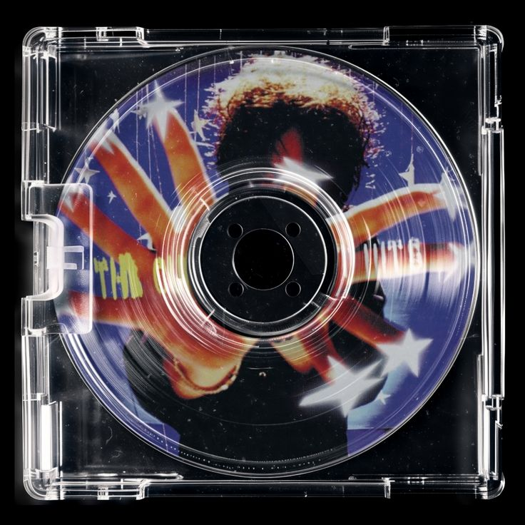
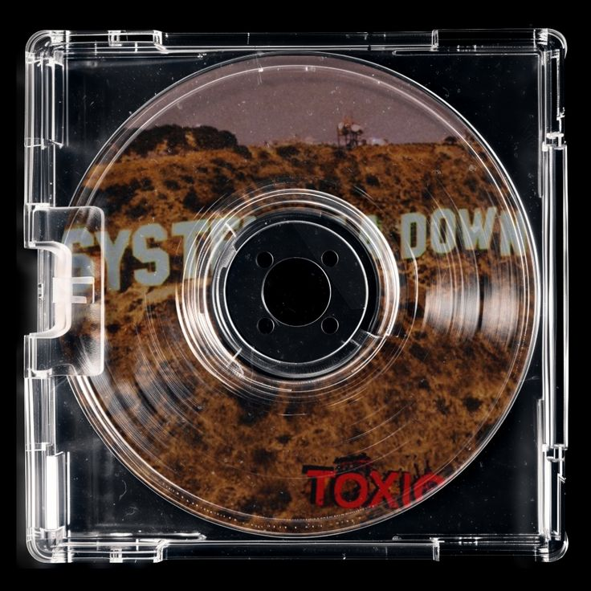
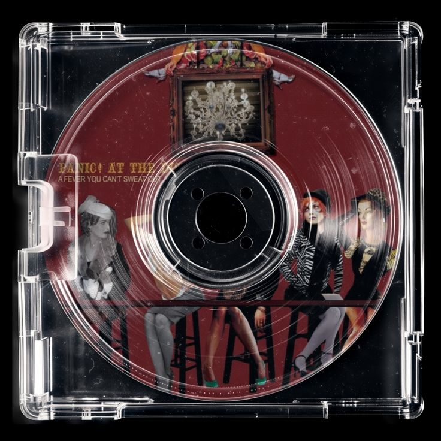
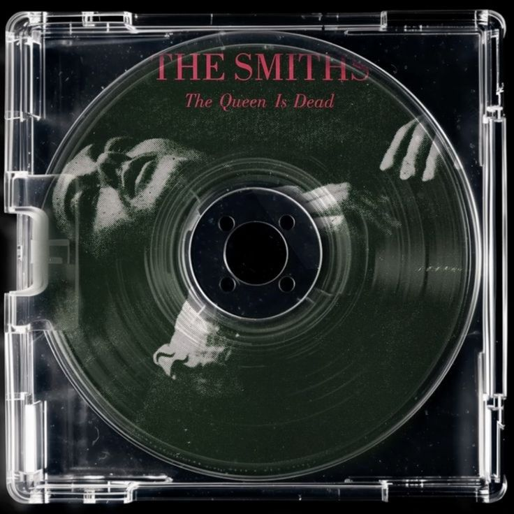

Best album cover from their discography, visually. It has all the greatest hits as well. best album for any yearner

I never skip any of the song in this album. banger after banger; best gym music.

Brendan Urie made a hit and fell off from here to be honest. But over a decade and this album is still on everyones minds

Sad man singing in my ears, best album for long car rides or when the morning is slow. Instant classic